X
3D modellen als werk
Het is 2015, ik speel het spel Minecraft for 3 jaar. De makers plaatsen een bericht op hun site met een nieuwe update: 1.8.
Net deze update kreeg je de mogelijkheid om eigen 3D modellen in het spel te laden. Waar ze eerst de mogelijkheid gaven om volledige OBJ WaveFront modellen in te laden, bleek dat toch niet zo'n goed idee.
|
Voorbeelden van mijn 3D modellen
Nu weet je dat ik al een tijdje bezig ben met het maken van 3D modellen voor Minecraft.
Modern Weapons PackDit is een project dat iedereen kan downloaden, dit heb ik puur gemaakt zodat ik wat meer in de community rond ging.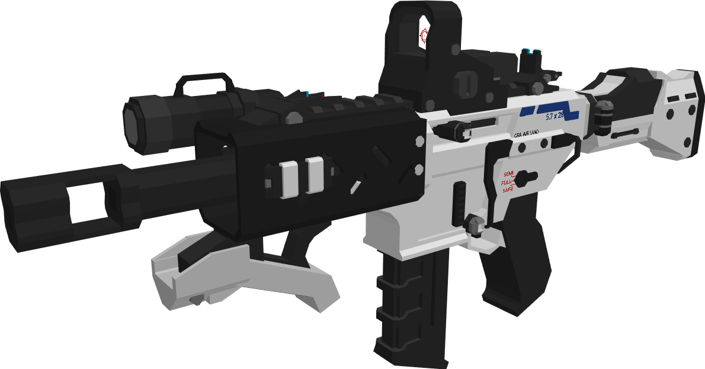 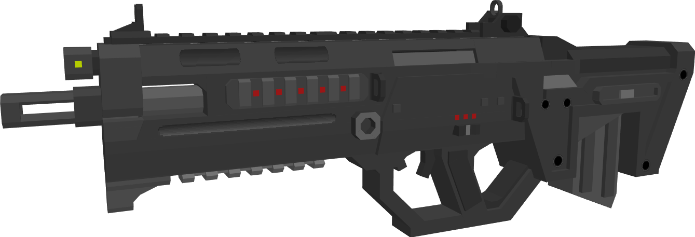 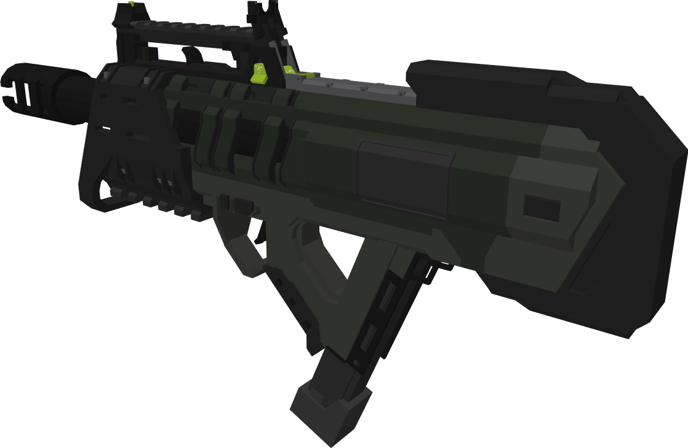 Pokémon Generatie 5Dit project was voor een best grote klant waar ik al 2 generaties aan pokémon had voor gemaakt.Helaas door de hele corona bende moesten developers uit het team verdwijnen en is de release van de Generatie 5 nog ver te zoeken. 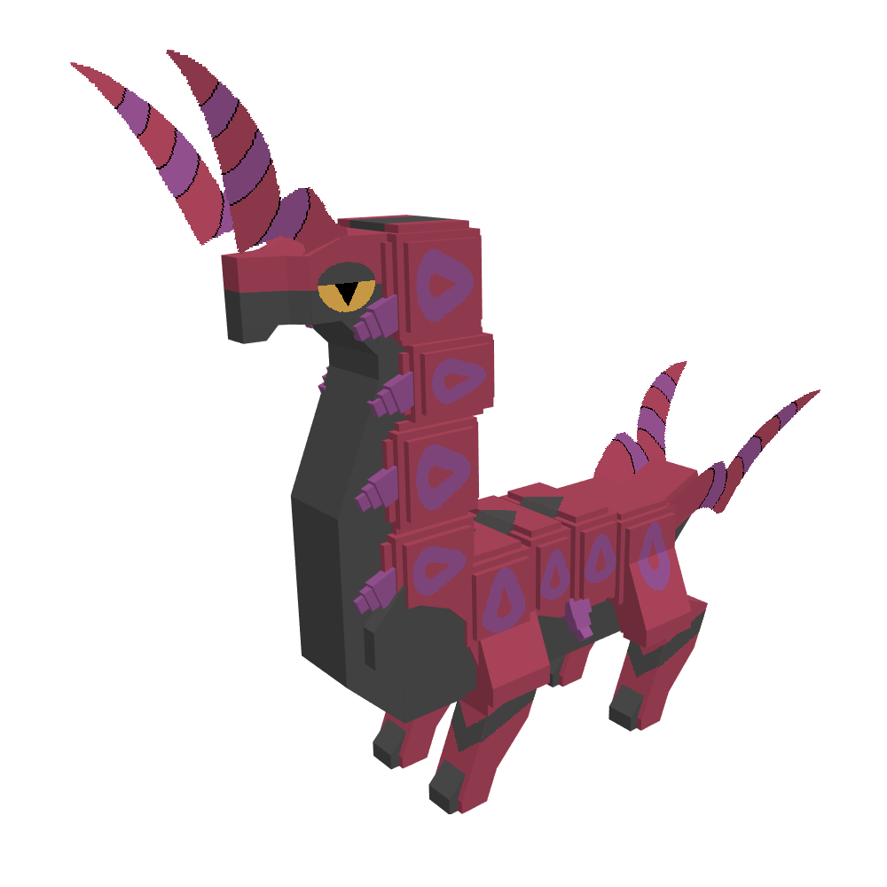  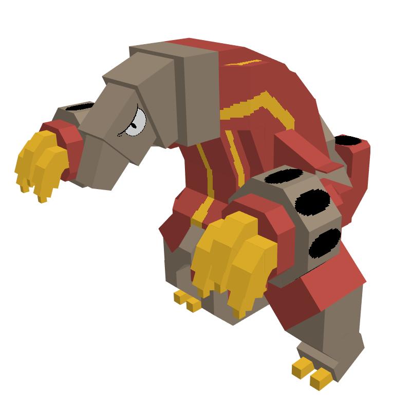
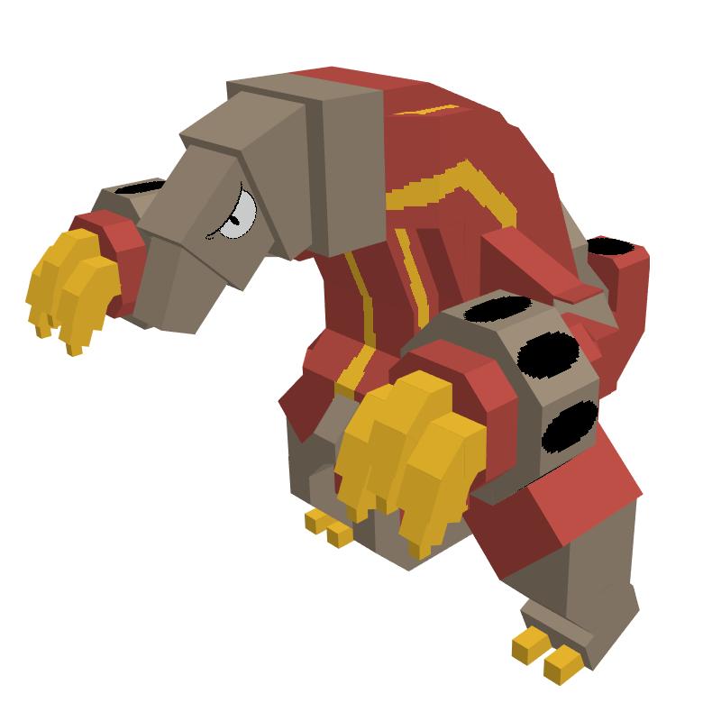
|
Nog meer voorbeelden
Hieronder nog meer voorbeelden van wat projecten van nu, of die ik al heb afgerond.
RPG Medieval WapensEen klant van me waar ik nog voor werk, wilde een lijst met voorbeelden van fantasie/medieval wapens naar 3D modellen gemaakt hebben. Hieronder mijn favoriete modellen daar van.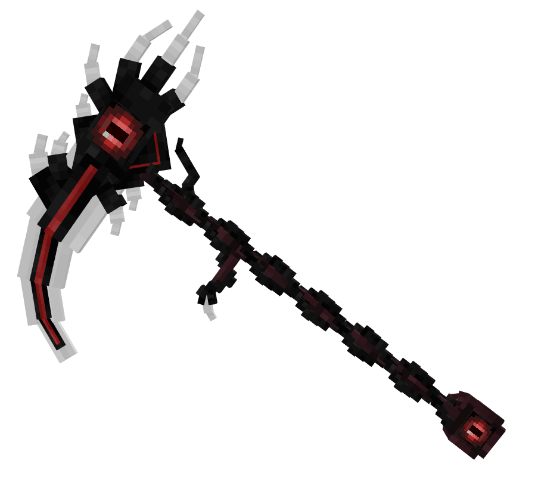 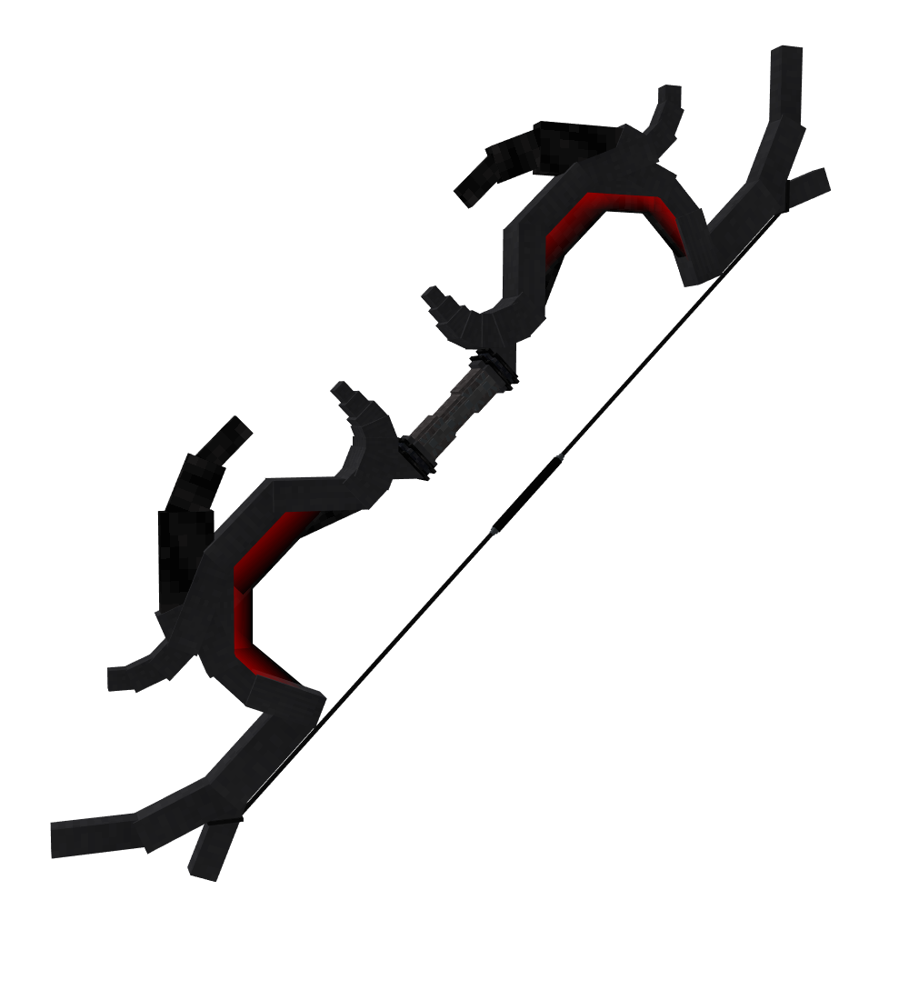 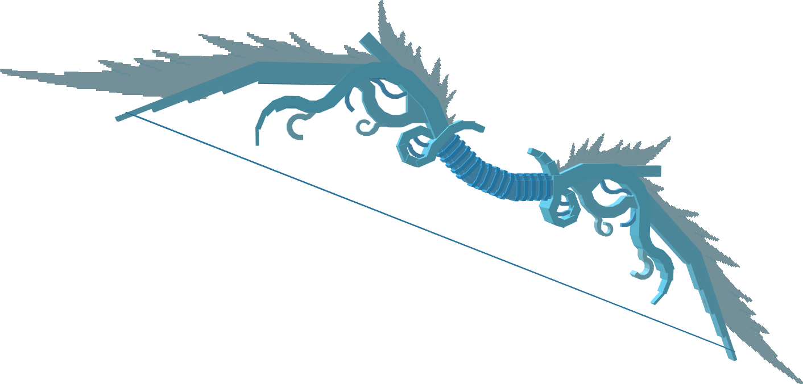 Wat random modellenGemaakt voor verschillende projecten, maar heb er maar even snel een paar gepakt.Deze eerste, de zombie, is voor een project in samenwerking met een YouTuber genaamd CaptainSparklez. 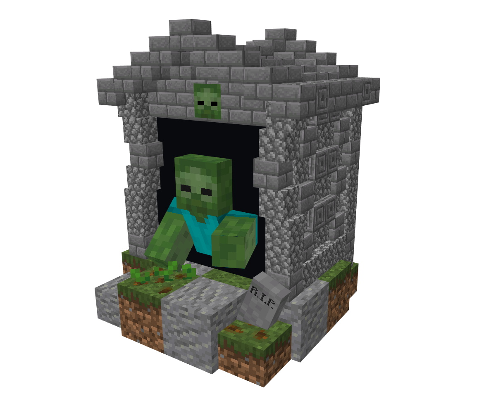 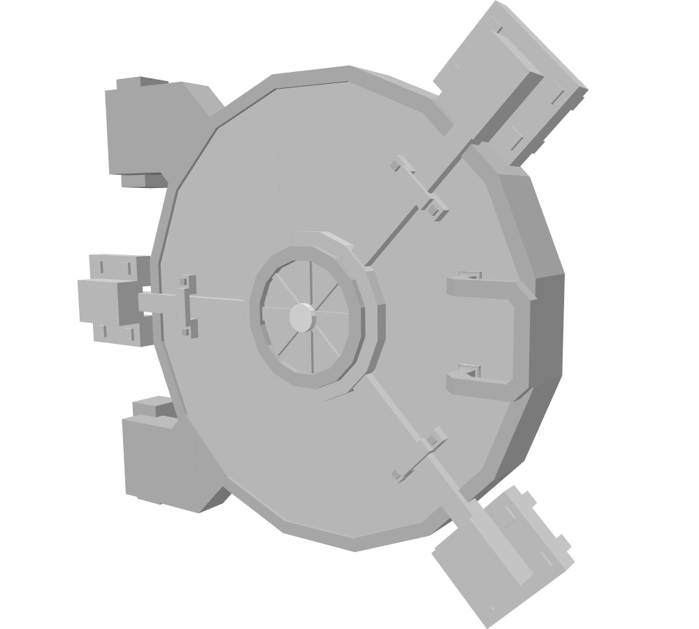 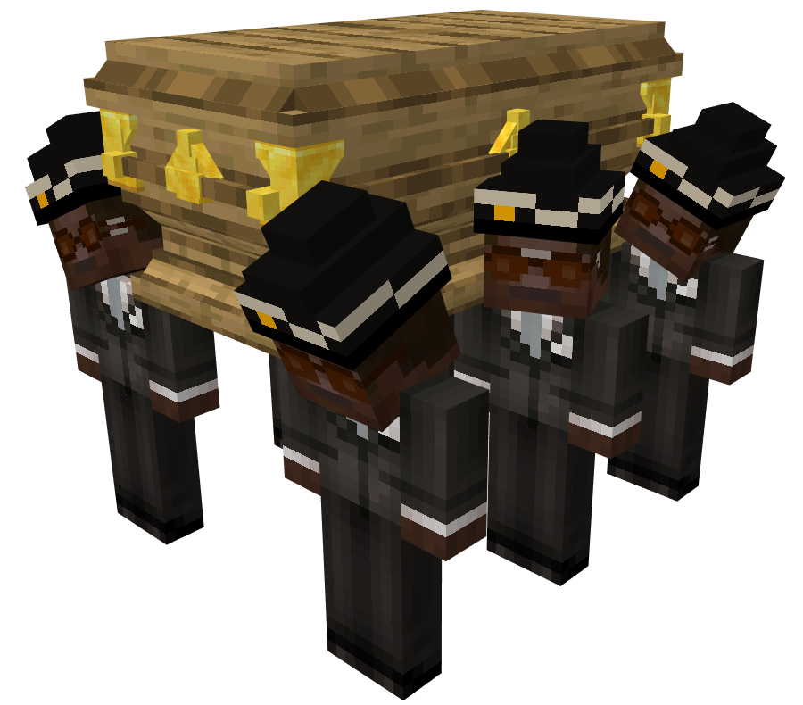 |
En natuurlijk nog andere hobbies
Destijds vond ik tekenen heel leuk, maar ik kon er niks van. Toch op het VMBO heb ik veel getekend.
Naast dat ik mijn eigen games wilde maken dacht je toen natuurlijk ook na over hoe je leven zelf er uit zou zien.
|